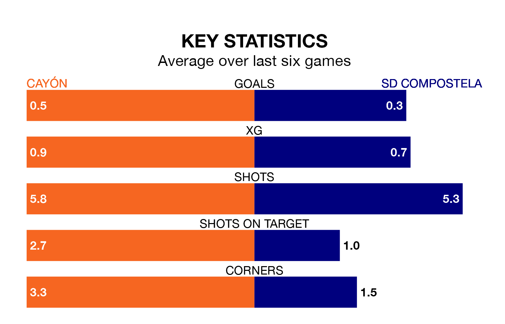

Cayón face SD Compostela on Sunday looking to secure a first win in eight Segunda División RFEF Group 1 games.
Cayón have lost four and drawn three matches since they last earned three points – against Coruxo on January 28.
They face a Compostela side who have won one and drawn two over that time.
Cayón are 17th in the table after 27 games, of which they have won four and drawn 11, earning 23 points.
Compostela are nine places ahead of the hosts in eighth, with 10 wins and six draws putting them on 36 points.
With 24 goals in 27 games so far this season, Cayón are scoring at below the league average rate with 0.9 goals per game. And they are conceding more than average, letting in 38 goals at a rate of 1.4 per game.
The away team are also below average scorers, with 1.0 goal per game, compared to a league average of 1.1. They have also conceded 1.0 goal per game.
Cayón's last match was on Sunday, a 4-0 loss against Covadonga.
Compostela lost 1-0 against Langreo last time out, also on Sunday.
Updated: 10:19 (UTC), 22/03/24